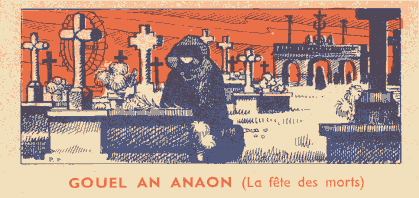
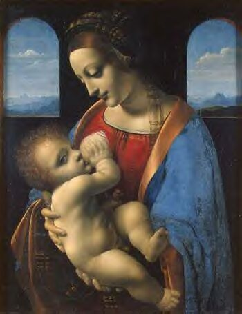
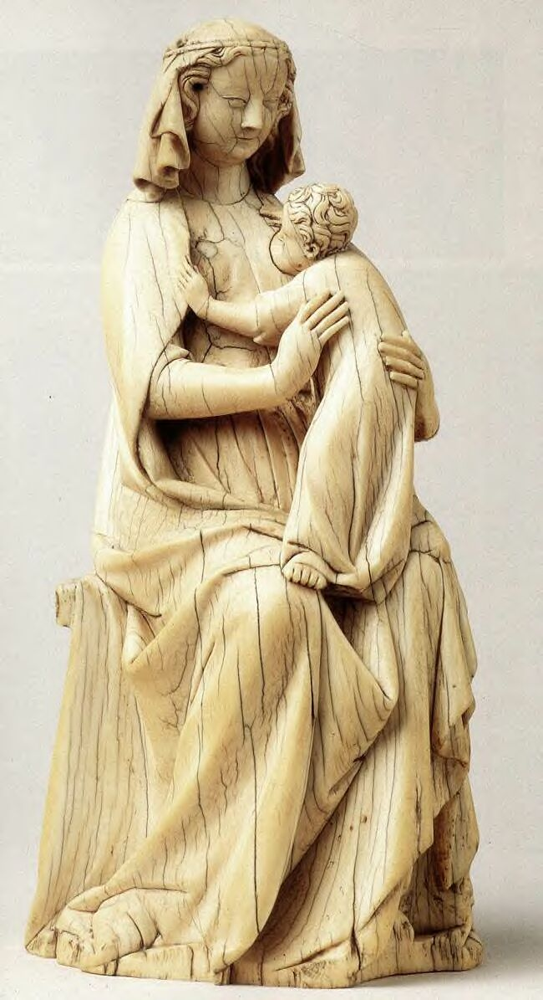
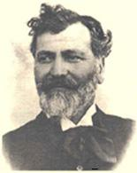

Chant des Trépassés
All Souls' Hymn
Dialecte de Cornouaille
|
. Par l'Abbé Cadic, dans "Paroisse bretonne de Paris", nov. 1899: "La complainte des Trépassés" et nov.1900: "Les Trépassés". . Par Loeiz Herrieu, dans "Dihunamb" nov. 1909, "Guerzen en Inéanneu" . Par le Chanoine Pérennès dans les "Annales de Bretagne", 1924, volume 36-1, pages 31-69, complaintes du pays vannetais (collectées par l'archiprêtre de Vannes, le Chanoine Buléon), de Cornouaille et de Léon |
 |
. By Abbé Cadic, in "Paroisse bretonne de Paris", Nov. 1899: "Lament of the Departed" and Nov.1900: "The Departed". . By Loeiz Herrieu, in "Dihunamb" Nov. 1909, "Guerzen en Inéanneu" . By Canon Pérennès in "Annales de Bretagne", 1924, volume 36-1, pages 31-69, laments from the Vannes area (gathered by the Vannes archpriest, Canon Buléon), from Cornouaille and from Léon. |
Mélodie - Tune
(Mode hypodorien)
| Français | English |
|---|---|
|
Vous gardent, gens de ce logis, Bien portants: c'est le voeu sincère De ceux qui quêtent vos prières. 2. Lorsque la mort frappe à la porte, Un frisson d'horreur nous emporte. Qui devra, puisqu'elle s'attarde, S'en aller avec la camarde? 3. Mais, vous, ne soyez pas surpris Qu'ainsi nous frappions à votre huis. C'est Jésus qui nous a chargés D'éveiller ceux qui sont couchés, 4. D'arracher chacun au sommeil. Que petits et grands se réveillent! Et s'il reste encore ici-bas Quelque pitié! Oyez nos voix! 5. Frères, parents, amis, vous tous, Au nom de Dieu, écoutez-nous! Ecoutez, priez! Priez bien Car les enfants, eux, ne prient point! 6. Nous sommes tombés dans l'oubli De ceux que nous avions nourris. Oui, ceux que nous avons aimés Nous ont, sans pitié, délaissés. 7. Mon fils, ma fille, vous dormez En vos lits de plume douillets, Quand brûlent en l'âtre expiatoire Vos père et mère, au purgatoire. 8. Vous reposez là mollement, Quand vos pauvres morts sont dolents. Vous dormez dans l'indifférence Pour vos morts et pour leur souffrance. 9. Cinq planches, un drap blanc peut-être, Un peu de paille sous la tête, Cinq pieds de terre par-dessus: Tous nos autres biens ne sont plus. 10. De toutes parts le feu nous cerne, De la tête aux pieds nous enferme. En haut, en bas, il est partout. Frères humains, priez pour nous! 11. Nous avions, étant de ce monde, Parents et amis à la ronde. Aujourd'hui, que nous sommes morts, Avons-nous des amis encor? 12. Au nom de Dieu ! Secourez-nous ! Priez la Vierge à deux genoux Quelle verse un peu de son lait, Sur nos plaies, pauvres trépassés. 13. Sautez vite hors de votre lit, Mettez-vous à genoux, sauf si Vous êtes malades ou, morts, Partagez déjà notre sort. |
Keep you healthy to the utmost! Prompt Them to grant you good health may Those who came to prompt you to pray! 2. When Death comes and knocks at the door The hearts are stricken with horror When Death appears on our threshold, Of whom does it want to get hold? 3. About us you need not worry Who stay at your door, as you see. The One Who, to wake you, sent us Is none other than Lord Jesus. 4. To awake you, folks of this home, Grown-ups, children, all, we have come. If pity exists down below, Be good! On us your help bestow! 5. Brothers, relatives , whoever Loved us, in God's name, consider How much your prayers we need Since children prayer books don't read. 6. Though we raised them, by our children We are, alas, long forgotten. By those we have loved most dearly We're abandoned without pity. 7. You're asleep, my son, my daughter On a soft mattress of feather. Whereas your father, your mother In purgatory's blaze smother. 8. You soundly sleep in your soft bed. Cruel is the fate of the poor dead. In your bed you're soundly sleeping. The poor dead bear great suffering. 9. A white shroud and five boards for bed, A straw pillow to lay our head, And five feet of earth over us: That 's about all we possess. 10. We are devoured by fire and dread: Fire beneath us, fire on our heads, Fire to the left, fire to the right. Pray to assuage our sad plight! 11. Once, before we had ceased to live We had friends, we had relatives, Since we're in the realm of the dead Relatives and friends from us fled. 12. In God's name, come to our rescue And pray to the Holy Virgin, too, That she but a drop of her milk Over the woeful dead may spill. 13. Off your beds now, do not dawdle! It's time to kneel by the candle. Unless you have a malady Or death has fetched you already. |
(Texte Breton Text)

|
La Fête des Morts
Cette fête qui est célébrée chez les Catholiques, le lendemain de la Toussaint, le 2 novembre, est fondée sur l'idée que les âmes mortes en état de péché véniel voient leurs souffrances allégées par la prière des vivants et le sacrifice de la messe. Elle remonte à St Odilon, abbé de Cluny mort en 1048. L' "argument" rédigé par La Villemarqué en introduction de ce chant peut se résumer ainsi: "C'est le 'mois noir' (miz du= novembre) que l'Eglise a choisi pour songer aux morts et prier pour eux. Le soir de la Toussaint, on venait s'agenouiller sur la tombe de ses parents défunts, remplir d'eau bénite le creux de leur pierre funèbre et dans quelques localités, y faire des libations de lait. Puis avait lieu un office religieux. Les cloches ne cessaient de tinter durant toute la nuit et parfois, à l'issue des vêpres, avait lieu une procession aux flambeaux autour du cimetière au cours de laquelle le recteur bénissait chaque tombe. Dans chaque maison le repas restait servi pour les défunts et le feu du foyer restait allumé pour qu'ils puissent s'y réchauffer. Lorsqu'on se mettait au lit, on entendait à la porte retentir des chants funèbres, ceux des trépassés qui empruntaient la voix des pauvres de la paroisse demandant des prières pour les défunts et des aumônes pour eux-mêmes." "Perméabilité" de l'Au-delà dans la tradition celte . Si la prière pour les âmes du purgatoire est parfaitement orthodoxe, l'importance et les formes revêtues autrefois en Bretagne par la liturgie du Jour des morts, et par le culte des morts en général, ne peuvent que surprendre. Bien que ces considérations soient formellement condamnées par les historiens, beaucoup d'auteurs des deux derniers siècles, et spécialement celui de la "Légende de la mort", Anatole Le Braz , (cf infra) voient dans cette fascination qu'on éprouvait naguère en Basse Bretagne pour l'autre monde, l'héritage de conceptions propres aux peuples celtes. L'ancienneté de cette préoccupation de l'au-delà, propre aux Celtes, est attestée, disent-ils, par les écrits d'auteurs antiques: Jules César, Lucain et Procope. Ce dernier (6ème siècle après JC, dans "La guerre des Goths"), indique qu'ils placent le séjour des morts dans l'Île de Bretagne et raconte comment les pêcheurs d'Armorique les y conduisent dans leurs barques. L'ancienne poésie épique d'Irlande a conservé certains des détails contenus dans cette narration, sans qu'on puisse cependant identifier formellement l'idyllique "terre des jeunes" (tîr nan ôg) à l'"orbis alius" de Lucain ou à la Bretagne de Procope, ni ses habitants, les " sidhe " (fées) avec des mortels défunts. Les filles de cette "terre agréable" y attirent parfois des héros qui s'y rendent pour quelque temps avant de revenir chez eux. D'autres traditions irlandaises mêlent ce monde et l'autre-monde. Quand les Fils de Milésius , dont est issue la race actuelle des Irlandais, envahirent le pays, les occupants précédents, les "hommes de la déesse Dana", disparurent sans abandonner l'île, où ils sont tantôt visibles, tantôt invisibles. Leurs séjours d'outre-tombe sont situés en Irlande même. Puis dans d'autres récits les morts revenants se confondent avec les "sidhe" et les remplacent peu à peu, tout en gardant l'essentiel de leurs caractèrisiques: ils habitent des lieux souterrains qu'ils quittent périodiquement, en particulier le 1er novembre, jour appelé "Samain". La nuit de Samain , les morts participent aux réjouissances des fées, boivent dans leurs coupes, dansent avec elles... Spécificités bretonnes Cette antique curiosité des Celtes pour les problèmes de la mort s'était conservée jusqu'au siècle dernier en Bretagne où l'on a vu apparaître de somptueux monuments funéraires avec des ossuaires souvent plus beaux que les églises, agrémentés de motifs sculpturaux parmi lesquels figure en bonne place le valet de la mort, l' "Ankou" . Alors qu'on s'efforçait ailleurs, par mesure d'hygiène, d'éloigner des villages les cimetières, en Bretagne, cela était regardé comme des profanations et ceux-ci occupent en général le centre de la bourgade, au milieu des vivants. Ce qui brouille la perception de cette filiation, c'est la grande prédication, intensifiée à la suite de la révolte "du Papier timbré" en 1675, en vue d'arrêter la révolte et de prêcher la soumission à Dieu et au roi, à un pays peu ou mal christianisé. Elle fut menée à bien par des Jésuites, principalement le Père Julien Maunoir et le Père Michel Le Nobletz , dans la moitié des paroisses et vit l'introduction de nouvelles pratiques: grandes processions, cantiques, culte de nouveaux saints et de la Sainte Famille avec Saint Anne, qui ont continué de marquer la Bretagne. Le sort des âmes trépassées est marqué désormais par la terreur de l'enfer, les descriptions sadiques des supplices qu'on y enduraient et dont le "cantique" du P. Maunoir, , "l"Enfer", est un saisissant condensé. L'Anaon Certains mots du vocabulaire religieux breton (lan, lean...) remontent à la plus haute antiquité: ce serait le cas d' "Anaon", le peuple des trépassés, qui donne son nom au présent chant. Dans le récit gallois "Pwyll, Prince de Dyfed" - extrait d'un manuscrit qui date d'environ 1325, mais qui a du exister sous forme écrite depuis plus longtemps et conserve bon nombre de mythes celtes primitifs - le mot "Anwynn" désigne un royaume de l'autre monde. Les contes et légendes collectés par A. Le Braz , montrent, que malgré les efforts des missions, les Bretons ont admis difficilement la notion d'éternité de peines, surtout prononcées par un Dieu infiniment bon. Le présent chant, montre des âmes du purgatoire qui viennent adresser leurs demandes de prières aux vivants. Elles sont donc dans un monde intermédiaire encore rattaché au nôtre pour un certain temps. C'est à ces défunts encore liés à l'univers qu'ils ont quitté que s'applique ce concept d'Anaon. L'image qui illustre cette page est issue d'un manuel scolaire de breton. Il applique clairement aux "locataires" du purgatoire le mot "daonet", damnés. Le lait de la Grâce...  L'étonnante demande des âmes du purgatoires, à la strophe 12, n'a non plus rien à voir avec l'enseignement rigoriste du P. Maunoir. Elle reprend la tradition des images de la Vierge allaitant l'Enfant, connues sous le nom de "Maria lactans" et qui furent en vogue au 4ème siècle, en Egypte, sous le nom de "Galactotrophysa" et surtout du 13ème au 16ème siècle, à un moment où l'humanité du Christ faisait un retour en force dans le débat théologique. Ce motif réapparaît au 18ème siècle avec le thème de la "Fontaine de vie" qui dépeint Marie comme une fontaine dont les mamelles déversent l'eau de la vie. C'est sans doute ce thème qui est évoqué dans ce chant et dans les "libations de lait" dont parle La Villemarqué.Ou le lait de Samain? Cependant, on me signale que l'on peut voir dans la strophe 12: "Pedit ar Werc'hez benniget/ Da skuilhañ ul lomm eus he laezh/ Ul lomm war an anaon kaezh" une lointaine réminiscence du rôle joué par le lait dans d'anciennes célébrations marquant le début de l'an celtique, le 1er jour du mois "Samonios" (calendrier gaulois de Coligny) ou "Samain" en Irlande, christianisé en "Kala goañv" (calende d'hiver) en Basse-Bretagne et "Toussaint" en terre de langue française. Ce rôle est attesté dans un poème tiré de "Hibernica Minora", un fragment d'un traité en vieil-irlandais consacré au psautier (ensemble des 150 psaumes des religions juive et chrétienne) et consigné dans le manuscrit "Rawlison B 512" de la bibliothèque Bodléienne dit "Anecdota oxoniensa". Ce texte a été étudié par le philologue celtique allemand Kuno Meyer (1858-1919). Voici la traduction qu'en donne le linguiste Christian Guyonvarc'h (1926-2012): "Viande, bière, noix , andouille, C'est ce qui est dû à Samain, Feu de camp joyeux sur la colline Lait baraté , pain et beurre frais" |
All Souls' Day
This Feast of All Souls, celebrated in the Catholic Church, on the day following All Saints' Day, on November 2, is based on the idea that the souls stained with venial sins at death, may be helped in their sufferings by the prayers of the living and the sacrifice of the Mass. This celebration was first established by the abbot of Cluny, St. Odilo (d. 1048). The "argument" with which La Villemarqué introduces this song may be summed up as follows: "In the tradition of the Church the "black month" (miz du= November) is associated with remembrance of the departed and prayers for them. On All Souls' Night people flocked to the churchyards and kneeled at the graves of their loved ones, filled the hollow of their tombstones with holy water and, in some places, poured libations of milk on them. Then a funeral service was held, with bells tolling all night through and, sometimes, after vespers, a torchlight procession around the churchyard led by the parson who blessed the graves. At home the leftovers of the supper were left on the table for the souls and fire burnt in the hearth for them to warm up. At bedtime, funeral songs were heard, sung on behalf of the souls by the poor of the parish , asking for prayers for the departed and alms for themselves." "Perviousness" of the Otherworld in Celtic tradition. If praying for the souls in Purgatory is thoroughly orthodox, in Brittany, the importance and the form taken on by the observance of All Souls' Day and the celebration of the dead in general, are very much surprising. Though these considerations are as a rule met with the utmost scepticism by historians, many authors of the past two centuries, especially Anatole Le Braz (see below) who wrote the Breton lore collection "The Legend of Death", see in this fascination for the otherworld the legacy of beliefs peculiar to Celtic peoples. The antiquity of the Celtic concern with the beyond is attested to by the writings of ancient authors: Julius Caesar (Gallic War), Lucan (Pharsal) and Procopius. The latter who lived in the 6th century AD recounts in his "History of the Gothic War" that the Celts assume the dwelling of the dead to be located in Britain and how Armorican fishermen ferry them there in their craft. The old Irish epic poetry has some particulars reminding of these narratives, but it is unsure if the idyllic "Land of the Young" (Tîr Nan Ôg) may be identified with Lucan's "orbis alius" or Procopius' Britain, or its dwellers, the "sidhe" (fairies) with departed mortals. The women of this "plain of joy" sometimes lure thither heroes who, however, come back home after a while. Other Irish traditions locate this otherworld within our own world. When the Sons of Milesius , the mythical ancestor of the Gaels, settled in Ireland, the previous occupants, the "men of the goddess Dana", went underground without leaving the island, where they are now visible, now invisible. Their otherworld dwellings are located in Ireland itself. Later on human ghosts are mixed up with the "sidhe" whom they gradually replace in the lore, while preserving their main features: they live in the underground that they periodically leave, in particular on November 1st, called "Samain" . During the Samain night, the dead are supposed to partake in the fairies' frolics, to drink out of their cups, to dance with them... Breton specificities This ancient curiosity of the Celts about things relating to death was kept up until the past century in Brittany, where stately funerary monuments were erected, often even more magnificent than the nearby churches, with various sculptures representing among other subjects, the servant of Death, the "Ankou" . While elsewhere hygiene would impose moving cemeteries away, to the outskirts of the towns, in Brittany this would have been considered a profanation, so that they are found right in the middle of villages, in the midst of the living. The perception of the link existing between overall Celtic practice and Breton custom was blurred by the preaching of priests sent to Brittany on missionary activities that were intensified after the 1675 "Stamp-paper rising", with a view to stopping the rebellion and exhorting the insufficiently Christianized countryside to submission to God and King. This was carried out, in half of the parishes, by Jesuits, chiefly Father Julien Maunoir and Father Michel Le Nobletz, who proffered a new religious practice with great processions, new hymns, celebration of new saints and of the Holy Family with Saint Anne, that is still very much alive in Brittany. The speculations about the fate of the parted souls bore, from that time on, the hallmark of the terror of hell and the sadistic descriptions of the tortures awaiting there, of which the Blessed Maunoir's "Hymn on Hell" is a terrifying epitome. The "Anaon" Some words of the Breton religious vocabulary (lan, lean,...) claim high antiquity. So does the word "Anaon", the community of the departed, after which the present hymn is titled. In the Welsh narrative "Pwyll, Lord of Dyved" (out of a manuscript dating to c. 1325, but that must have existed in written form for a long time before and preserves much of the primitive Celtic myths), the word "Anwynn" refers to an otherworld kingdom. The legends and tales gathered by A. Le Braz demonstrate that the Breton folks, in spite of the missionaries' endeavours, admitted with difficulty the notion of eternal punishment, especially pronounced by an endlessly good God. The present hymn stages souls in Purgatory requesting prayers from the living. To do so, they must be dwelling for a certain time in an world, halfway between ours and the otherworld. It's to these departed still linked to the universe they have just left that the word "anaon" applies. The illustration to the present song comes from a Breton teaching book that clearly applies the word "daonet" -the damned- to the "occupants" of Purgatory. Milk of Grace...  The astonishing request of the souls of Purgatory, at verse 12, has little to do with Father Maunoir's rigid preaching. It resumes an old tradition of images representing Mary suckling the Baby, known as "Maria Lactans" pictures. They became fashionable as early as the late fourth century in Egypt, -as "Galactotrophysae"-, and much more so, between the 13th and 16th centuries, when theology shifted towards the contemplation of the humanness of Christ. This motif resurfaces in the 18th century with the "Fountain of Life" representation of Mary as a fountain whose breasts pour out the water of life. It may be assumed that this theme is referred to in the present song and in the "milk libations" mentioned by La Villemarqué.Or Samain's milk? However I have been told that we may see in strophe 12: "Pedit ar Werc'hez benniget / Da skuilhañ ul lomm eus he laezh / Ul lomm war an anaon kaezh" a distant reminiscence of the role played by milk in ancient celebrations marking the beginning of the Celtic year, on the 1st day of the month "Samonios" (Gallic calendar of Coligny) or "Samain" in Ireland, Christianized as "Kala goañv" (winter calender) in Lower Brittany and "All Saints" elsewhere. This role is attested in a poem taken from "Hibernica Minora", a fragment of a treatise in Old Irish devoted to the Psalter (corpus of all 150 psalms of the Jewish and Christian religions). It is recorded in ms "Rawlison B 512" of the Bodleian library known as "Anecdota oxoniensa". This text was studied by the German Celtic philologist Kuno Meyer (1858-1919). Here is the translation thereof given by the linguist Christian Guyonvarc'h (1926-2012): "Meat, beer, nuts, chitterlings, This is what is due to Samain, A cheerful bonfire on the hill Churned milk , bread and fresh butter " |
.
Anatole Le Braz (1859 - 1926)
|
Né à Saint-Servais (Côtes du Nord), ce fils d'instituteur après une enfance bretonne (Trégor), passa sa licence de lettres à Paris et devint professeur de lettres au lycée de Quimper en 1866.
Avec François-Marie Luzel , il collecte les éléments d'un recueil de chants publié en 1890 sous le titre de "Chansons populaires de la Basse-Bretagne - Soniou Breiz-Izel". Puis il réalise des enquêtes auprès des marins et des paysans et collecte des contes et légendes et d'autres chansons qui lui fournissent la matière de ses principaux ouvrages (tous en langue française): "La Légende de la Mort" (1893 et 1902), "Les Saints bretons d'après la tradition populaire" (1893) et "Au Pays des Pardons" (1894). De 1901 à 1924 il enseigne à la faculté des Lettres de Rennes et exécuta des missions d'enseignement en Suisse et aux Etats-Unis, les matières traitées étant la Bretagne, le romantisme et le théatre celtique. On lui doit également plusieurs recueils de poésies: "La Chanson de la Bretagne" (1892), Tryphina Keranglaz (1892), Poèmes votifs (1926) et plusieurs nouvelles. Bien qu'il soit sensible au talent de La Villemarqué auquel il rend parfois hommage, ce fut l'un de ses détracteurs les plus assidus. |
 |
Le Braz was born in Saint-Servais (Nothern Brittany) where his father was school master and grew up in the Breton speaking Tregor. He studied at Paris Faculty of Arts, then returned in 1866 to Brittany where he taught for 14 years at the high school in Quimper.
He co-operated with François-Marie Luzel and gathered folk songs that were published in a collection titled "Chansons populaires de la Basse-Bretagne - Soniou Breiz-Izel". Then he made enquiries among sea men and peasants, collecting tales, legends and ditties that provided him with materials for his main works (all in French): "La Légende de la Mort" (1893 and 1902), "Les Saints bretons d'après la tradition populaire" (1893) and "Au Pays des Pardons" (1894). From 1901 till 1924 he was lecturer, then professor at the Faculty of Arts in Rennes and was often sent on cultural and teaching missions abroad, in particular to Switzerland and USA. His works deal with Brittany, Romanticism and Celtic theater. He also composed several collections of poetry: "La Chanson de la Bretagne" (1892), Tryphina Keranglaz (1892), Poèmes votifs (1926) and several short stories. Though he was not insensible to La Villemarqué's talent -which he now and then acknowledged, he was as a whole one of his most assiduous disparagers. |